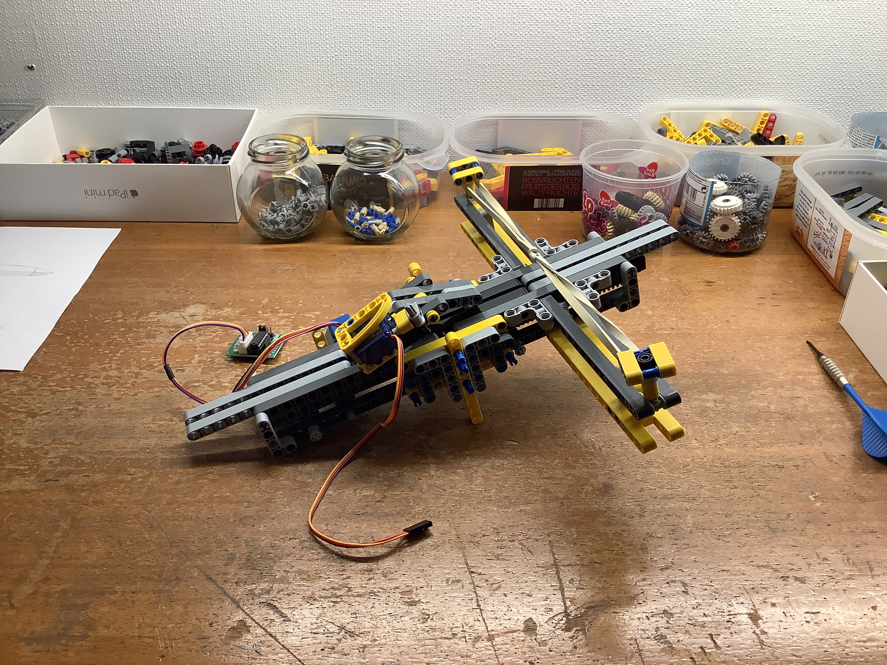
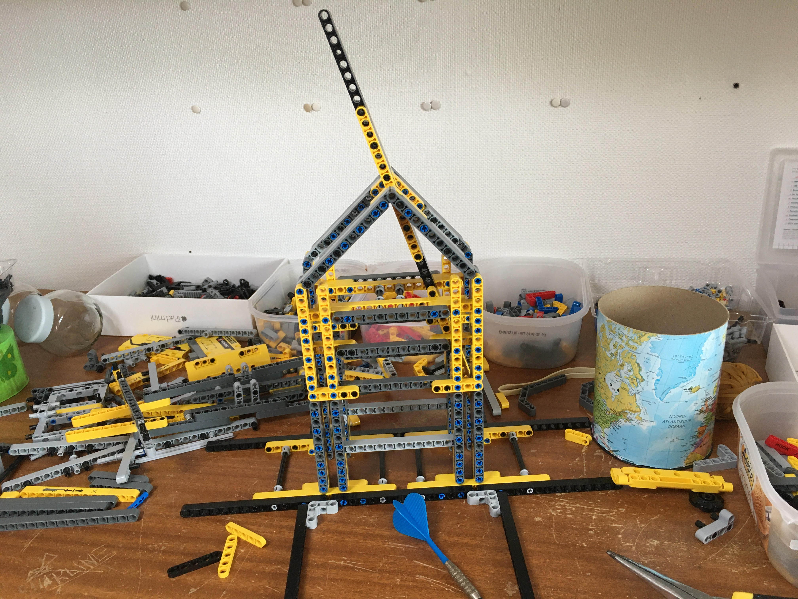
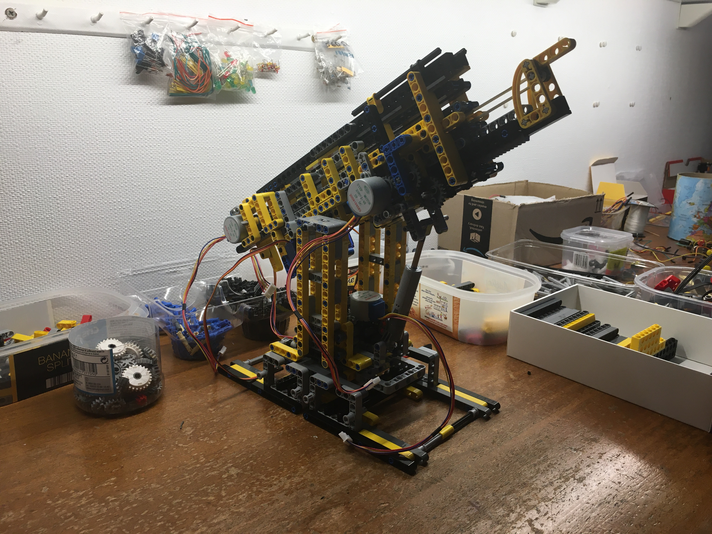
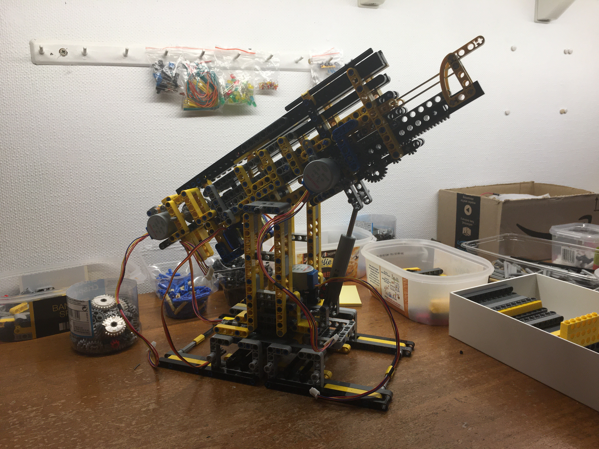
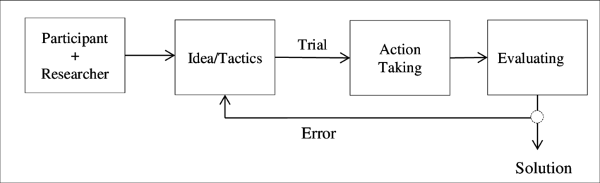
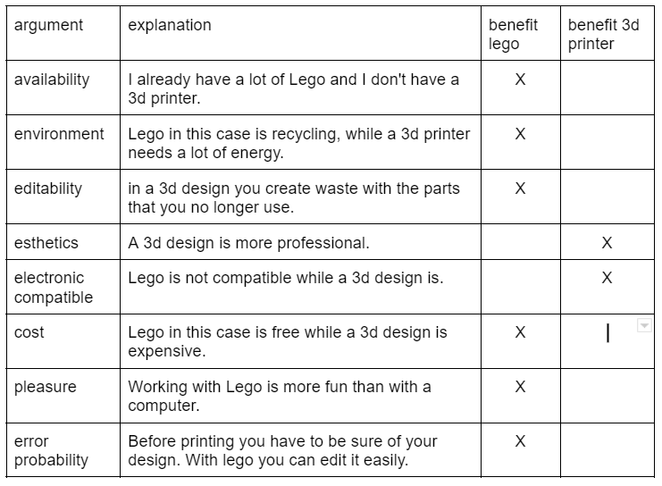
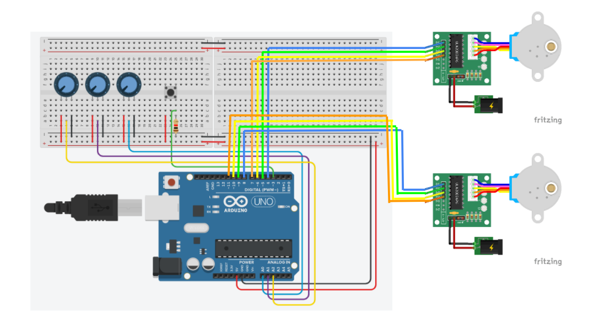

1. Introduction
1.1. Context
This webpage is the result of a research assignment for my physics course. This is a very applied paper with a smaller emphasis on the theory behind it.
More and more we see that computer science plays a role within the sciences. That is why I chose physics because it is easy to link with it.
The webpage therefore starts from the challenge of whether a darts match can be won by a computer without any help from a human being. So fully automatic.
More and more we see that computer science plays a role within the sciences. That is why I chose physics because it is easy to link with it.
The webpage therefore starts from the challenge of whether a darts match can be won by a computer without any help from a human being. So fully automatic.
1.2. Issue
Reasearch Questions :
So the ultimate goal is to make a robot that can win a darts game. So I will try to answer the following questions:
How does initial speed affect accuracy? How does the firing angle affect the accuracy? How does shooting distance affect accuracy? What is the general accuracy of the canon? To what extent is it better or worse than a professional player?
So the ultimate goal is to make a robot that can win a darts game. So I will try to answer the following questions:
How does initial speed affect accuracy? How does the firing angle affect the accuracy? How does shooting distance affect accuracy? What is the general accuracy of the canon? To what extent is it better or worse than a professional player?
hypothesis :
I have never seen a robot that was built to automatically play darts, so it will certainly not be easy. But I think it is feasible. In this video we see an industrial arm robot throwing a dart. It is important to note that the robot is not designed to throw a dart as its primary purpose. Also, the creator of the robot had a lot of resources, which I don't have. My robot would be different in that sense, because the robot's primary purpose will be to play darts.
My hypothesis is that the accuracy decreases the further the projectile is thrown. I also think the robot is most accurate when the darts and board are perpendicular to each other after firing. That depends on the height of the robot and the board, so you have to adjust the initial speed and the shooting angle.
Overall accuracy I think depends on several factors. I do think my robot will be more accurate than a person who darts regularly. But whether he will be better than a professional player, I doubt.
I have never seen a robot that was built to automatically play darts, so it will certainly not be easy. But I think it is feasible. In this video we see an industrial arm robot throwing a dart. It is important to note that the robot is not designed to throw a dart as its primary purpose. Also, the creator of the robot had a lot of resources, which I don't have. My robot would be different in that sense, because the robot's primary purpose will be to play darts.
My hypothesis is that the accuracy decreases the further the projectile is thrown. I also think the robot is most accurate when the darts and board are perpendicular to each other after firing. That depends on the height of the robot and the board, so you have to adjust the initial speed and the shooting angle.
Overall accuracy I think depends on several factors. I do think my robot will be more accurate than a person who darts regularly. But whether he will be better than a professional player, I doubt.
1.3. Background
Darts
For this research assignment I use an electronic dartboard. The goal is for the robot to win a 301 game. The aim here is to get from 301 to exactly 0 points as quickly as possible in series of triplets. If you fall below 0 points, you have to start back where your previous triplet ended.
You can make doubles and triples by firing into the outer and inner circle respectively. Normally, the aim is to finish with a double. However, I'm not going to work with that rule.
For this research assignment I use an electronic dartboard. The goal is for the robot to win a 301 game. The aim here is to get from 301 to exactly 0 points as quickly as possible in series of triplets. If you fall below 0 points, you have to start back where your previous triplet ended.
You can make doubles and triples by firing into the outer and inner circle respectively. Normally, the aim is to finish with a double. However, I'm not going to work with that rule.
2. Preparation
2.1. Handling way
My research assignment follows the trial and error method.
The intention will therefore be to make the robot step by step. With each prototype I will determine whether I am closer to my goal or not. If not, I'll have to determine what went wrong and see how I can fix it. If the solution is effective, then I can work on the next step to reach my goal.
Because it is a large, complex project, it is important to divide it into steps. I will therefore first investigate which system is most adapted to shoot a dart. The intention is then to make the frame of the robot. To which I can then add the electronics and the code. This will also be done in steps by first controlling the canon through arduino and then gradually automating it by a raspberry pi.

The intention will therefore be to make the robot step by step. With each prototype I will determine whether I am closer to my goal or not. If not, I'll have to determine what went wrong and see how I can fix it. If the solution is effective, then I can work on the next step to reach my goal.
Because it is a large, complex project, it is important to divide it into steps. I will therefore first investigate which system is most adapted to shoot a dart. The intention is then to make the frame of the robot. To which I can then add the electronics and the code. This will also be done in steps by first controlling the canon through arduino and then gradually automating it by a raspberry pi.
2.2. Material
I could use both a 3d printer and lego to make the robot. So I first had to see which
one is most adapted to my project.
So I will work with Lego. More precisely with lego technic. These are
also better adapted to the trial and error method I use.

2.3. Planning
I started this research assignment in October. The official deadline is June 31.
3. Execution
3.1. Finding the right system
There are several shooting systems that I could use to throw a dart. That the raison why I will first determine which
one is the best, in my example.
So I'm going to first look at the positives and negatives points of different shooting systems.
Pression Cannon :
In a pression cannon the projectile serves as a cap in a tube that connects 2 airtight compartments. When we make the pressure of the front compartment go lower and/or increase the pressure of the rear compartment, then the aur wants to go from the rear to the front. This is only possible by pussing the cap, which launches the projectile. A pression cannon can be really efficient and powerful. Not a wonder that it is so mainly used. The reason why I won’t use a pression for my darts cannon is that it is impossible to build in lego and even with a 3d-printer it has to be really strong otherwise you’re just creating a bomb! And that’s not the real mission I gave to myself.
Magnetic launcher :
It works on the same principles as a motor. Instead of placing the coils rotationally, they are now just set on a straight line. I find it a really interesting mechanism, so I hope to work with it in another project. But the problem today is that it is not so easy to make. And building it in lego, is I think quite impossible. Certainly if you have to include the ability of changing the acceleration of the projectile. On the other hand it can be really great because you don’t need any charging time.
Machine gun :
Here the principle is to let 2 motors rotate in opposite directions close together without touching each other. The projectile is then placed between these two and will make contact with them. Because the motors are turning in opposite directions, the projectile will be launched in a straight line. It is a great system because it is easy to build but the main problem is that you can’t aim precisely and that the gun isn’t adapted to launch a dart.
Prototype I, Trebuchet :
The first prototype I made was a trebuchet. I started with that because it was easy to build and that I thought it could be strong and precise enough to launch a dart. Unfortunately it wasn’t. The main problems were that you needed a lot of legos to build the frame of the cannon. Even when I made something really strong, the problem was that a lot of force was needed to rotate the lever and the projectile. This made in sort many pieces injured stress. So for prototype II, I will have to choose a throwing mechanism where the only thing that moves is the projectile and nothing else.
Prototype II, Crossbow :
For the second prototype, I choose to build a crossbow. It is precise, buildable in lego, not too big, easily adjustable and the only part that moves is the dart. What could possibly go wrong? Well the main issue was the fact that you couldn’t reinforce the structure in the entire triangle that the elastic forms when it was charged. Meanwhile another issue was that the crossbow wasn’t that much precise. This is due to the fact that the launch track was so small that the dart had to accelerate rapidly.
Slingshot Catapult :
The crossbow was already a good attempt to launch a dart. I then decided to fix the issues by bringing the 2 supports points of the elastics closer to each other. That had as consequence that the launch track could be longer. Otherwise, the slingshot has the same advantages as the crossbow. Not a wonder that I decided to continue with this type of launch system.
Conclusion
In the end, I could conclude that the best launch system was the slingshot catapult. In prototype III you will see that I am building the first working prototype. Even if it won’t be exactly a slingshot, it is mainly inspired by it.
Pression Cannon :
In a pression cannon the projectile serves as a cap in a tube that connects 2 airtight compartments. When we make the pressure of the front compartment go lower and/or increase the pressure of the rear compartment, then the aur wants to go from the rear to the front. This is only possible by pussing the cap, which launches the projectile. A pression cannon can be really efficient and powerful. Not a wonder that it is so mainly used. The reason why I won’t use a pression for my darts cannon is that it is impossible to build in lego and even with a 3d-printer it has to be really strong otherwise you’re just creating a bomb! And that’s not the real mission I gave to myself.
Magnetic launcher :
It works on the same principles as a motor. Instead of placing the coils rotationally, they are now just set on a straight line. I find it a really interesting mechanism, so I hope to work with it in another project. But the problem today is that it is not so easy to make. And building it in lego, is I think quite impossible. Certainly if you have to include the ability of changing the acceleration of the projectile. On the other hand it can be really great because you don’t need any charging time.
Machine gun :
Here the principle is to let 2 motors rotate in opposite directions close together without touching each other. The projectile is then placed between these two and will make contact with them. Because the motors are turning in opposite directions, the projectile will be launched in a straight line. It is a great system because it is easy to build but the main problem is that you can’t aim precisely and that the gun isn’t adapted to launch a dart.
Prototype I, Trebuchet :
The first prototype I made was a trebuchet. I started with that because it was easy to build and that I thought it could be strong and precise enough to launch a dart. Unfortunately it wasn’t. The main problems were that you needed a lot of legos to build the frame of the cannon. Even when I made something really strong, the problem was that a lot of force was needed to rotate the lever and the projectile. This made in sort many pieces injured stress. So for prototype II, I will have to choose a throwing mechanism where the only thing that moves is the projectile and nothing else.
Prototype II, Crossbow :
For the second prototype, I choose to build a crossbow. It is precise, buildable in lego, not too big, easily adjustable and the only part that moves is the dart. What could possibly go wrong? Well the main issue was the fact that you couldn’t reinforce the structure in the entire triangle that the elastic forms when it was charged. Meanwhile another issue was that the crossbow wasn’t that much precise. This is due to the fact that the launch track was so small that the dart had to accelerate rapidly.
Slingshot Catapult :
The crossbow was already a good attempt to launch a dart. I then decided to fix the issues by bringing the 2 supports points of the elastics closer to each other. That had as consequence that the launch track could be longer. Otherwise, the slingshot has the same advantages as the crossbow. Not a wonder that I decided to continue with this type of launch system.
Conclusion
In the end, I could conclude that the best launch system was the slingshot catapult. In prototype III you will see that I am building the first working prototype. Even if it won’t be exactly a slingshot, it is mainly inspired by it.
3.2. Prototype III, the first working prototype :
objective :
The main objective is to make clear that the slingshot is the correct shooting system and to gain experience in throwing darts to make the next prototypes more robust and better. The robot will therefore (for now) not work automatically, but will be controlled by potentiometers.
How does it works ?
The firing system uses 2 stepper motors, the first of which has to pull the firing attachment to which the dart hangs, the second then stretches on the elastic. The servo motor serves as a trigger. The operation of the canon can be described in the following loop:
Firstly stepper motor 1 will pull the firing attachment towards himself. He will do that by winding up a wire. When the attachment finally is at the same height as the trigger, the servo motor will then hold the attachment tight. Next the second stepper motor will stretch the elastic. Afterwards the stepper motor 1 will wind down the wire. Finally once the robot is ready to shoot, the servo motor will pull down and the dart is then launched. If you then want to shoot again you will firstly have to unstretch the elastic using stepper motor 2. Lots of words for something easy, the next video explains it way better than me.
The reason there are two stepper motors is because individually they don't have enough power to stretch the elastic.
You can shoot higher or lower by moving the piston. This causes the canon to tilt backwards or forwards. You can move horizontally by moving the turntable at the bottom, which then rotates the entire cannon.
The electronic circuit is quite straightforward. I will not explain here how a stepper motor works (you can watch the next video if you have to).
The arduino code is really easy to understand. I use the arduino library Stepper.h. It is not well coded but
it works. With it, I can control the 2 stepper motor of the cannon with 2 potentiometers. The last potentiometer
and the button control the servo motor. The arduino code can be found
here, on my github repository.
improvements to make :
The robot is working and is capable of throwing a dart, however it is not perfect. The first improvement is the arduino code. For now, it’s impossible to control both motors at the same time because (I guess) I’m using the stepper.h library. That’s the reason why the loading time is so long. To encounter this problem, I will have to improve my code. But I could also change a lot of things on the robot itself. Instead of using two stepper motors to load the canon, I think it should be possible to use only one by changing the elastics. The other solution is to put not 1 but 3 cannons on each other. Logically the loading time will then be divided by 3.
The second problem is the precision of the robot. All darts, without changing anything on the robot, come in the same cirkel with a radius of 7 cm. That is still not precise enough if I want to win a match against my family members.
The third improvement is the horizontal aiming mechanism. For now, to aim more to the right, the robot has to rotate entirely on itself. Because of the long distance to the board, the angle the robot has to form is really small, something around 10°. The robot has to be therefore really precise. Another mechanism, like putting the entire robot on wheels would probably work better.
To fully automate the robot, I will have to use at least 4 motors. That combined with all the sensors will take a lot of GPIO (general purpose input/output) pins on the arduino. The solution will be to use another board than the Arduino uno and to use some shift registers.
The goal now is to improve all these problems in the next prototype, Prototype IV!
PARTS 2 : Prototype IV
The main objective is to make clear that the slingshot is the correct shooting system and to gain experience in throwing darts to make the next prototypes more robust and better. The robot will therefore (for now) not work automatically, but will be controlled by potentiometers.
How does it works ?
The firing system uses 2 stepper motors, the first of which has to pull the firing attachment to which the dart hangs, the second then stretches on the elastic. The servo motor serves as a trigger. The operation of the canon can be described in the following loop:
Firstly stepper motor 1 will pull the firing attachment towards himself. He will do that by winding up a wire. When the attachment finally is at the same height as the trigger, the servo motor will then hold the attachment tight. Next the second stepper motor will stretch the elastic. Afterwards the stepper motor 1 will wind down the wire. Finally once the robot is ready to shoot, the servo motor will pull down and the dart is then launched. If you then want to shoot again you will firstly have to unstretch the elastic using stepper motor 2. Lots of words for something easy, the next video explains it way better than me.
The reason there are two stepper motors is because individually they don't have enough power to stretch the elastic.
You can shoot higher or lower by moving the piston. This causes the canon to tilt backwards or forwards. You can move horizontally by moving the turntable at the bottom, which then rotates the entire cannon.
The electronic circuit is quite straightforward. I will not explain here how a stepper motor works (you can watch the next video if you have to).

improvements to make :
The robot is working and is capable of throwing a dart, however it is not perfect. The first improvement is the arduino code. For now, it’s impossible to control both motors at the same time because (I guess) I’m using the stepper.h library. That’s the reason why the loading time is so long. To encounter this problem, I will have to improve my code. But I could also change a lot of things on the robot itself. Instead of using two stepper motors to load the canon, I think it should be possible to use only one by changing the elastics. The other solution is to put not 1 but 3 cannons on each other. Logically the loading time will then be divided by 3.
The second problem is the precision of the robot. All darts, without changing anything on the robot, come in the same cirkel with a radius of 7 cm. That is still not precise enough if I want to win a match against my family members.
The third improvement is the horizontal aiming mechanism. For now, to aim more to the right, the robot has to rotate entirely on itself. Because of the long distance to the board, the angle the robot has to form is really small, something around 10°. The robot has to be therefore really precise. Another mechanism, like putting the entire robot on wheels would probably work better.
To fully automate the robot, I will have to use at least 4 motors. That combined with all the sensors will take a lot of GPIO (general purpose input/output) pins on the arduino. The solution will be to use another board than the Arduino uno and to use some shift registers.
The goal now is to improve all these problems in the next prototype, Prototype IV!